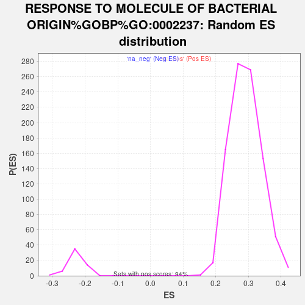

| | | Dataset | CD_deg |
| Phenotype | NoPhenotypeAvailable |
| Upregulated in class | na_pos |
| GeneSet | RESPONSE TO MOLECULE OF BACTERIAL ORIGIN%GOBP%GO:0002237 |
| Enrichment Score (ES) | 0.6277126 |
| Normalized Enrichment Score (NES) | 2.157141 |
| Nominal p-value | 0.0 |
| FDR q-value | 0.0 |
| FWER p-Value | 0.0 |
Table: GSEA Results Summary
 Fig 1: Enrichment plot: RESPONSE TO MOLECULE OF BACTERIAL ORIGIN%GOBP%GO:0002237
Fig 1: Enrichment plot: RESPONSE TO MOLECULE OF BACTERIAL ORIGIN%GOBP%GO:0002237
Profile of the Running ES Score & Positions of GeneSet Members on the Rank Ordered List
| SYMBOL | RANK IN GENE LIST | RANK METRIC SCORE | RUNNING ES | CORE ENRICHMENT | | 1 | CXCL8 | 0 | 15.354 | 0.0288 | Yes |
| 2 | S100A8 | 13 | 11.918 | 0.0504 | Yes |
| 3 | SLC11A1 | 25 | 10.245 | 0.0689 | Yes |
| 4 | MMP3 | 28 | 10.090 | 0.0877 | Yes |
| 5 | IL1B | 50 | 9.080 | 0.1035 | Yes |
| 6 | CXCL6 | 54 | 9.013 | 0.1202 | Yes |
| 7 | SELE | 64 | 8.710 | 0.1360 | Yes |
| 8 | CXCL5 | 73 | 8.524 | 0.1515 | Yes |
| 9 | XBP1 | 77 | 8.482 | 0.1672 | Yes |
| 10 | CXCL2 | 79 | 8.331 | 0.1827 | Yes |
| 11 | LGALS9 | 89 | 8.264 | 0.1977 | Yes |
| 12 | CARD16 | 91 | 8.246 | 0.2131 | Yes |
| 13 | CXCL10 | 113 | 7.983 | 0.2268 | Yes |
| 14 | NOS2 | 122 | 7.843 | 0.2410 | Yes |
| 15 | SERPINE1 | 154 | 7.575 | 0.2533 | Yes |
| 16 | CYP27B1 | 174 | 7.447 | 0.2661 | Yes |
| 17 | LYN | 189 | 7.328 | 0.2789 | Yes |
| 18 | LILRB2 | 199 | 7.247 | 0.2920 | Yes |
| 19 | WNT5A | 205 | 7.222 | 0.3052 | Yes |
| 20 | CCL2 | 289 | 6.724 | 0.3127 | Yes |
| 21 | SNCA | 386 | 6.320 | 0.3187 | Yes |
| 22 | GSTP1 | 392 | 6.298 | 0.3302 | Yes |
| 23 | PF4V1 | 410 | 6.220 | 0.3408 | Yes |
| 24 | MAPKAPK2 | 479 | 5.995 | 0.3478 | Yes |
| 25 | F2R | 495 | 5.952 | 0.3581 | Yes |
| 26 | TLR4 | 546 | 5.753 | 0.3658 | Yes |
| 27 | NOD2 | 566 | 5.699 | 0.3753 | Yes |
| 28 | IL1A | 582 | 5.670 | 0.3850 | Yes |
| 29 | RHOA | 625 | 5.566 | 0.3929 | Yes |
| 30 | CD14 | 658 | 5.487 | 0.4012 | Yes |
| 31 | CD274 | 664 | 5.473 | 0.4111 | Yes |
| 32 | CXCL9 | 669 | 5.453 | 0.4211 | Yes |
| 33 | JAK2 | 683 | 5.435 | 0.4305 | Yes |
| 34 | TLR2 | 688 | 5.427 | 0.4404 | Yes |
| 35 | IL6 | 753 | 5.297 | 0.4464 | Yes |
| 36 | LY96 | 763 | 5.269 | 0.4557 | Yes |
| 37 | HCK | 791 | 5.204 | 0.4638 | Yes |
| 38 | IRAK3 | 827 | 5.136 | 0.4713 | Yes |
| 39 | GCH1 | 879 | 5.010 | 0.4776 | Yes |
| 40 | CASP1 | 920 | 4.946 | 0.4844 | Yes |
| 41 | SELP | 956 | 4.885 | 0.4914 | Yes |
| 42 | TICAM2 | 967 | 4.872 | 0.4999 | Yes |
| 43 | CD86 | 993 | 4.828 | 0.5074 | Yes |
| 44 | MYD88 | 1143 | 4.568 | 0.5068 | Yes |
| 45 | PDE4B | 1153 | 4.544 | 0.5148 | Yes |
| 46 | ZC3H12A | 1171 | 4.506 | 0.5222 | Yes |
| 47 | PDCD1LG2 | 1200 | 4.462 | 0.5288 | Yes |
| 48 | BCL10 | 1206 | 4.450 | 0.5369 | Yes |
| 49 | GBP2 | 1234 | 4.407 | 0.5435 | Yes |
| 50 | MAPKAPK3 | 1267 | 4.345 | 0.5496 | Yes |
| 51 | SLPI | 1360 | 4.238 | 0.5519 | Yes |
| 52 | SCARB1 | 1405 | 4.191 | 0.5571 | Yes |
| 53 | CYRIB | 1596 | 3.954 | 0.5528 | Yes |
| 54 | TNIP3 | 1746 | 3.793 | 0.5507 | Yes |
| 55 | IRAK1 | 1788 | 3.755 | 0.5553 | Yes |
| 56 | SBNO2 | 1793 | 3.750 | 0.5620 | Yes |
| 57 | ACOD1 | 1833 | 3.711 | 0.5666 | Yes |
| 58 | CD24 | 1921 | 3.620 | 0.5680 | Yes |
| 59 | NLRP3 | 1977 | 3.546 | 0.5713 | Yes |
| 60 | RELA | 2026 | 3.492 | 0.5749 | Yes |
| 61 | NOCT | 2032 | 3.490 | 0.5811 | Yes |
| 62 | NLRP7 | 2110 | 3.427 | 0.5828 | Yes |
| 63 | AHR | 2121 | 3.414 | 0.5886 | Yes |
| 64 | MTDH | 2173 | 3.356 | 0.5918 | Yes |
| 65 | CD80 | 2199 | 3.332 | 0.5965 | Yes |
| 66 | ADAM9 | 2247 | 3.293 | 0.5997 | Yes |
| 67 | NFKB1 | 2258 | 3.283 | 0.6053 | Yes |
| 68 | CX3CR1 | 2381 | 3.173 | 0.6037 | Yes |
| 69 | HNRNPA0 | 2403 | 3.157 | 0.6084 | Yes |
| 70 | PLAA | 2509 | 3.059 | 0.6076 | Yes |
| 71 | SRR | 2512 | 3.058 | 0.6132 | Yes |
| 72 | TNFRSF1B | 2566 | 3.012 | 0.6156 | Yes |
| 73 | MAPK14 | 2690 | 2.910 | 0.6135 | Yes |
| 74 | HMGB2 | 2726 | 2.890 | 0.6168 | Yes |
| 75 | IL10 | 2798 | 2.822 | 0.6177 | Yes |
| 76 | CCL28 | 2831 | 2.793 | 0.6210 | Yes |
| 77 | LILRB1 | 2858 | 2.768 | 0.6246 | Yes |
| 78 | HMGB1 | 2946 | 2.695 | 0.6242 | Yes |
| 79 | IL18 | 2972 | 2.668 | 0.6277 | Yes |
| 80 | CD68 | 3266 | 2.448 | 0.6143 | No |
| 81 | TLR1 | 3446 | 2.327 | 0.6076 | No |
| 82 | CTR9 | 3570 | 2.240 | 0.6042 | No |
| 83 | IFNAR1 | 3681 | 2.173 | 0.6015 | No |
| 84 | FER | 3682 | 2.173 | 0.6056 | No |
| 85 | SELENOS | 3745 | 2.130 | 0.6058 | No |
| 86 | IL12A | 3791 | 2.102 | 0.6070 | No |
| 87 | TRIB1 | 3890 | 2.046 | 0.6048 | No |
| 88 | PELI1 | 4170 | 1.892 | 0.5911 | No |
| 89 | PAF1 | 4250 | 1.853 | 0.5898 | No |
| 90 | NUGGC | 4263 | 1.849 | 0.5925 | No |
| 91 | VIM | 4306 | 1.826 | 0.5933 | No |
| 92 | PYCARD | 4446 | 1.760 | 0.5881 | No |
| 93 | AXL | 4493 | 1.736 | 0.5885 | No |
| 94 | MMP9 | 4703 | 1.628 | 0.5787 | No |
| 95 | CPS1 | 5204 | 1.402 | 0.5505 | No |
| 96 | CCR5 | 5281 | 1.371 | 0.5484 | No |
| 97 | ADAM17 | 5409 | 1.311 | 0.5431 | No |
| 98 | RPS6KA3 | 5504 | 1.275 | 0.5397 | No |
| 99 | GFI1 | 5740 | 1.189 | 0.5274 | No |
| 100 | TAB2 | 5895 | 1.131 | 0.5201 | No |
| 101 | MEF2C | 5974 | 1.100 | 0.5173 | No |
| 102 | ZFP36 | 6041 | 1.072 | 0.5153 | No |
| 103 | UPF1 | 6056 | 1.066 | 0.5164 | No |
| 104 | TNFAIP3 | 6058 | 1.065 | 0.5184 | No |
| 105 | NOS3 | 6720 | 0.840 | 0.4792 | No |
| 106 | LDOC1 | 6816 | 0.807 | 0.4749 | No |
| 107 | CDC73 | 6970 | 0.750 | 0.4669 | No |
| 108 | IRAK2 | 7060 | 0.719 | 0.4628 | No |
| 109 | FCGR2B | 7077 | 0.713 | 0.4631 | No |
| 110 | CD180 | 7154 | 0.693 | 0.4597 | No |
| 111 | IL23R | 7310 | 0.648 | 0.4514 | No |
| 112 | NR1H3 | 7676 | 0.540 | 0.4300 | No |
| 113 | CTSG | 7960 | 0.465 | 0.4134 | No |
| 114 | PRDX3 | 8057 | 0.441 | 0.4083 | No |
| 115 | STAP1 | 8070 | 0.438 | 0.4084 | No |
| 116 | FOXP1 | 8132 | 0.423 | 0.4054 | No |
| 117 | CD6 | 8282 | 0.387 | 0.3970 | No |
| 118 | SSC5D | 8386 | 0.360 | 0.3913 | No |
| 119 | TNFSF4 | 8418 | 0.353 | 0.3901 | No |
| 120 | TLR6 | 8511 | 0.332 | 0.3850 | No |
| 121 | PRKCE | 8554 | 0.324 | 0.3831 | No |
| 122 | PLCG2 | 8836 | 0.264 | 0.3663 | No |
| 123 | NFKBIB | 8901 | 0.248 | 0.3628 | No |
| 124 | SMAD6 | 8993 | 0.226 | 0.3576 | No |
| 125 | IRAK4 | 9269 | 0.172 | 0.3410 | No |
| 126 | TLR9 | 9345 | 0.158 | 0.3367 | No |
| 127 | CXCL13 | 9708 | 0.088 | 0.3146 | No |
| 128 | CASP7 | 9990 | 0.043 | 0.2974 | No |
| 129 | PTPN22 | 10004 | 0.040 | 0.2966 | No |
| 130 | GBP3 | 10189 | 0.010 | 0.2853 | No |
| 131 | TLR10 | 10206 | 0.007 | 0.2843 | No |
| 132 | S100A14 | 10307 | -0.010 | 0.2782 | No |
| 133 | NR4A1 | 10720 | -0.080 | 0.2530 | No |
| 134 | OTUD5 | 10827 | -0.099 | 0.2467 | No |
| 135 | TRIM41 | 11182 | -0.181 | 0.2252 | No |
| 136 | DEFA6 | 11383 | -0.233 | 0.2133 | No |
| 137 | CACTIN | 11507 | -0.266 | 0.2063 | No |
| 138 | TRIM6 | 11539 | -0.274 | 0.2049 | No |
| 139 | PABPN1 | 11765 | -0.334 | 0.1916 | No |
| 140 | TNIP1 | 12225 | -0.477 | 0.1643 | No |
| 141 | TNFRSF11A | 12665 | -0.655 | 0.1385 | No |
| 142 | DEFA5 | 12960 | -0.812 | 0.1219 | No |
| 143 | LIAS | 12989 | -0.827 | 0.1217 | No |
| 144 | DAB2IP | 12991 | -0.828 | 0.1232 | No |
| 145 | MAPK8 | 12998 | -0.831 | 0.1244 | No |
| 146 | TRAF6 | 13213 | -0.952 | 0.1130 | No |
| 147 | CHMP5 | 13349 | -1.049 | 0.1067 | No |
| 148 | FBXO3 | 13412 | -1.095 | 0.1049 | No |
| 149 | SHPK | 13945 | -1.514 | 0.0750 | No |
| 150 | IRF5 | 13964 | -1.527 | 0.0768 | No |
| 151 | PDCD4 | 14178 | -1.723 | 0.0669 | No |
| 152 | TIRAP | 14330 | -1.876 | 0.0611 | No |
| 153 | NFKBIL1 | 14478 | -2.015 | 0.0558 | No |
| 154 | TICAM1 | 14498 | -2.034 | 0.0585 | No |
| 155 | PALM3 | 14583 | -2.129 | 0.0573 | No |
| 156 | GIT1 | 14716 | -2.283 | 0.0535 | No |
| 157 | FZD5 | 14976 | -2.665 | 0.0425 | No |
| 158 | NR1D1 | 15051 | -2.769 | 0.0432 | No |
| 159 | INAVA | 15157 | -2.918 | 0.0422 | No |
| 160 | TNIP2 | 15237 | -3.054 | 0.0430 | No |
| 161 | NR1I2 | 15338 | -3.214 | 0.0429 | No |
| 162 | CD36 | 16247 | -5.943 | -0.0019 | No |
| 163 | ERBIN | 16274 | -6.209 | 0.0082 | No |
Table: GSEA details [plain text format]

Fig 2: RESPONSE TO MOLECULE OF BACTERIAL ORIGIN%GOBP%GO:0002237: Random ES distribution
Gene set null distribution of ES for RESPONSE TO MOLECULE OF BACTERIAL ORIGIN%GOBP%GO:0002237